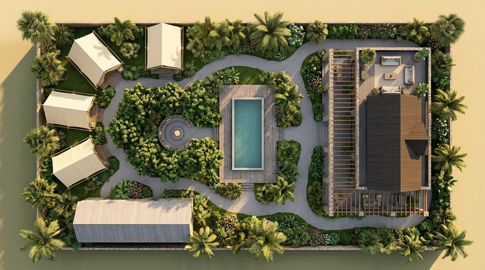
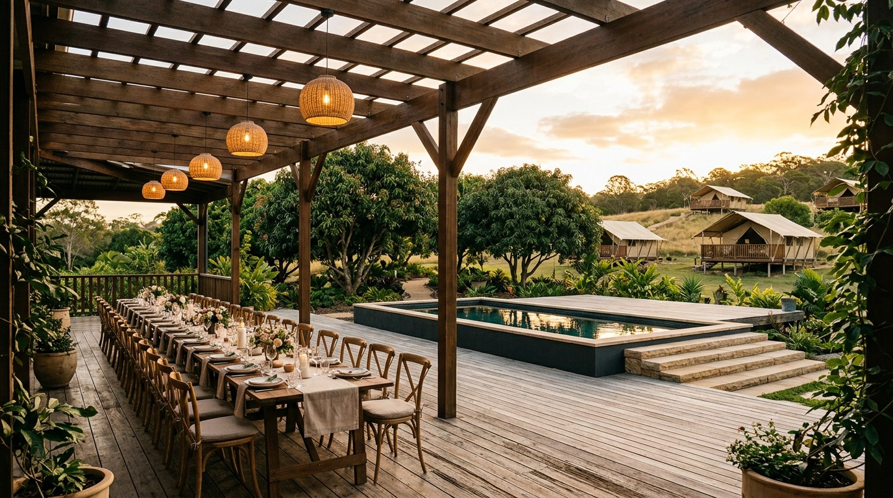
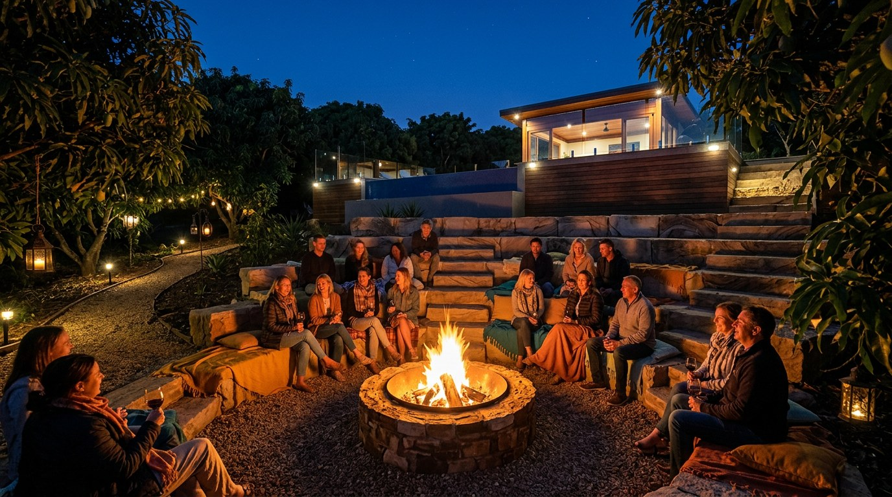
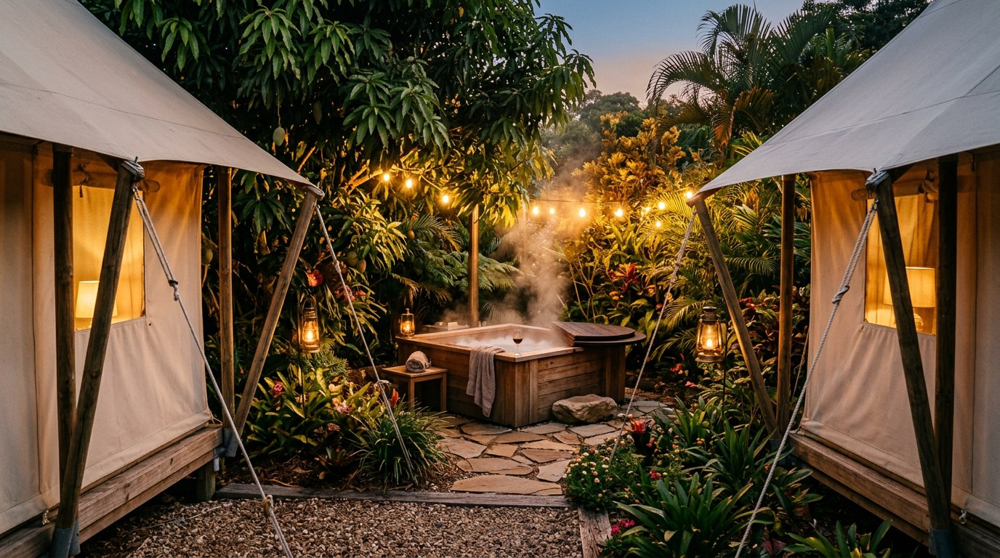
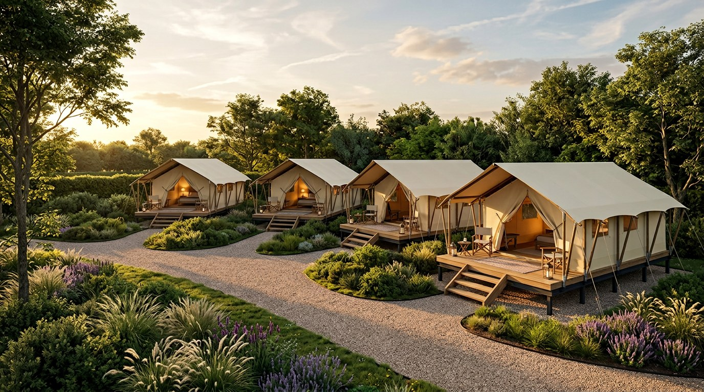
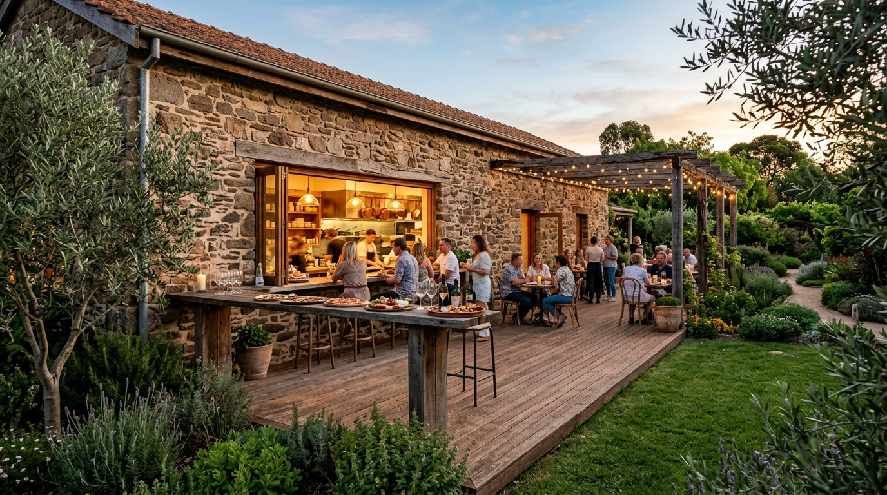
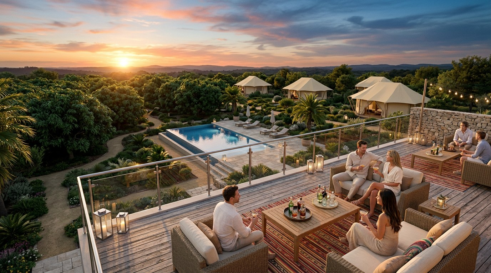
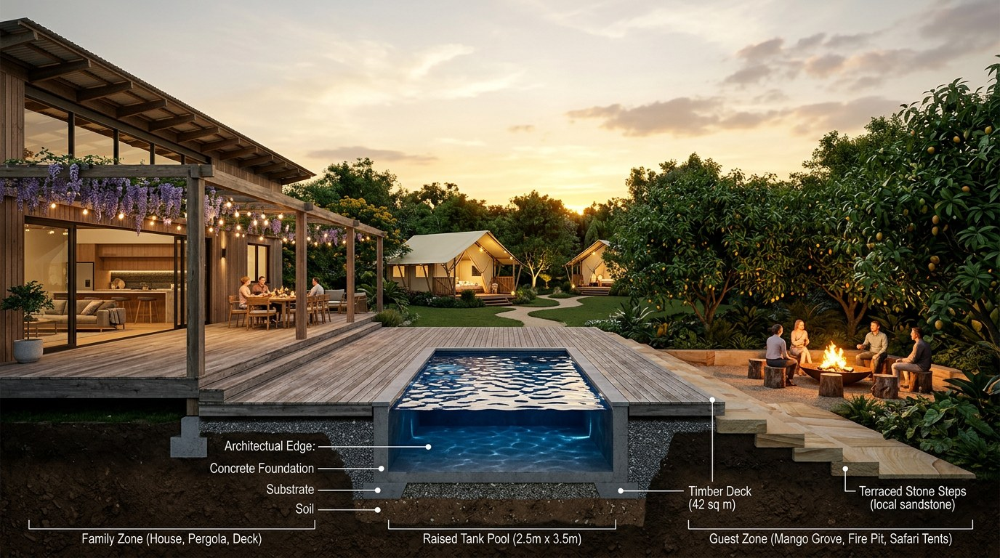

The Land at Simon · a look ahead, not an ask · September 2026
The house is the only thing we're asking anything of you for — that's Phase 0, and it stands on its own. Beyond the house, on the rest of the plot, here's the shape of what we've been designing. No commitment, no figures to weigh up — you just have an interest in the place, so you should see where the thinking has gone.
These are working design concepts, not a finished build. Nothing here is funded by you, and nothing here is being asked of you. If any of it happens, it's built and carried by me, on my own account, same as the rest of the business — the house stays the one thing we all hold together.

1,062 m² — 36m × 29.5m of deliberate geometry, the house on one side and the garden given over to guests on the other.

A raised pool reading as the boundary, seen from the family's own table.

Tiered stone seating built into the mango grove, for evenings after the kitchen closes.

Five seats, screened by the garden's own geometry rather than a fence.

5m × 9m each, on raised screw-pile decks, splayed to keep every tent its own view.
The actual plan is more gradual than this picture: two tents go up with the build, and a third and fourth are added later, one at a time, only once bookings justify them — not all four at once.

The old fieldstone warehouse, kitchen servery opening straight onto a deck.

The whole plan, legible in a single glance from above the house.

Family on one side, guests on the other, the pool holding the line between them — so the house stays ours even while the rest of the plot is working.
That's the direction of travel for the rest of the land, not a decision that needs anything from you today. The only live thing is the house — the house ask is here if you haven't seen it yet.
Questions or thoughts welcome any time — WhatsApp is easiest.